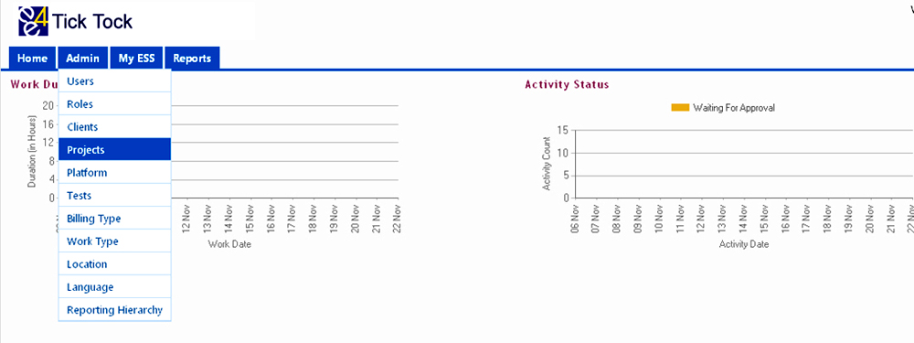
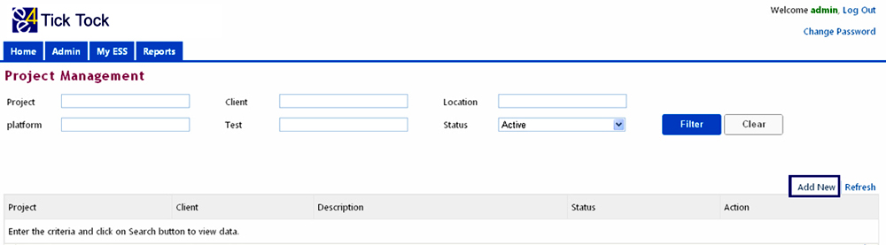
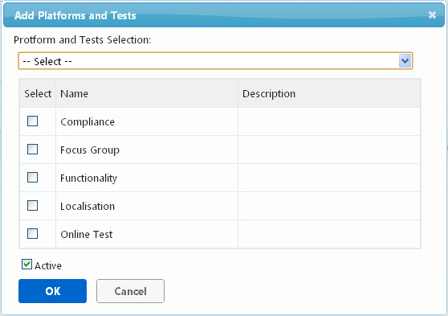
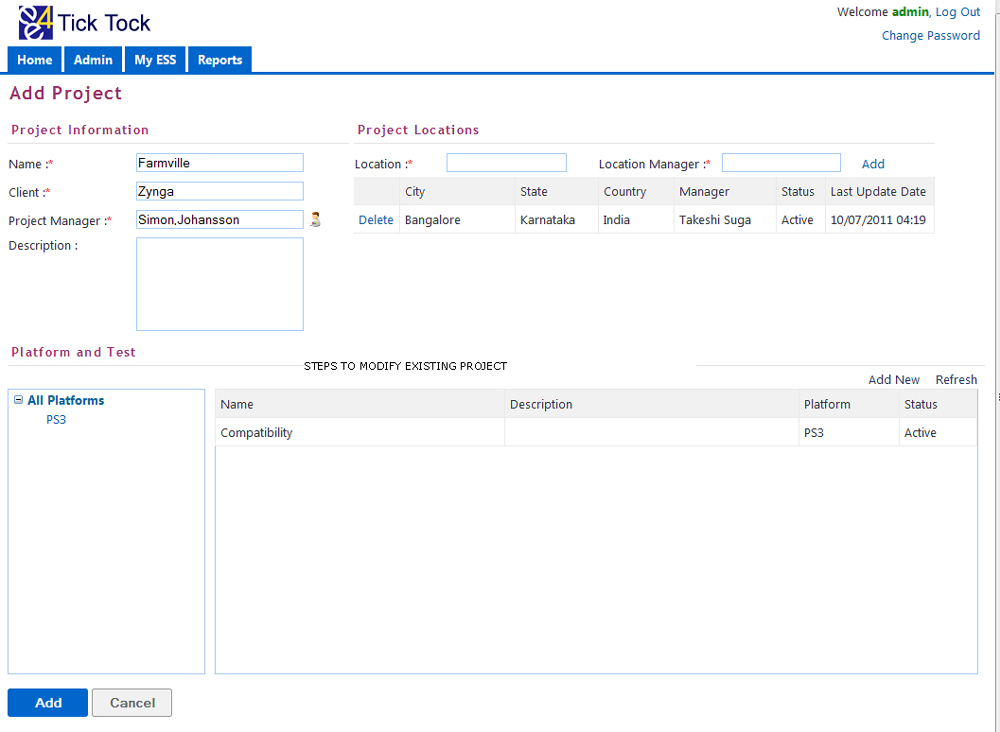
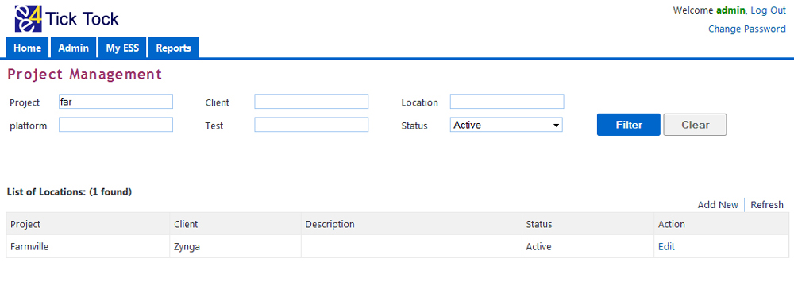
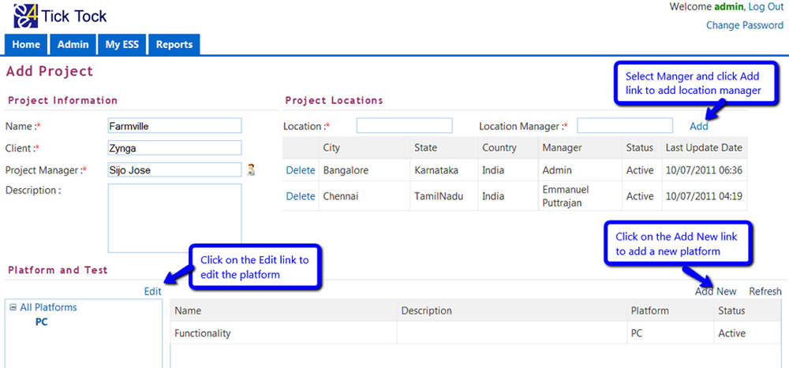
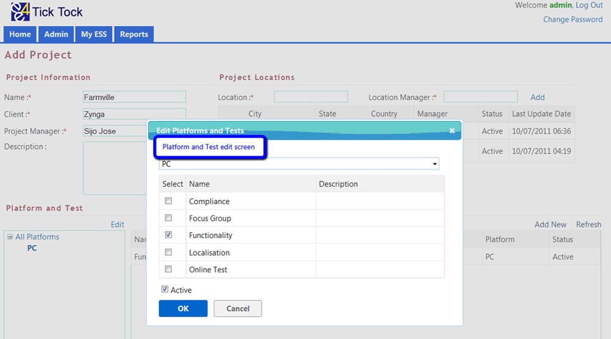

FUNCTION
- The Projects page helps us to add a new project to the master or modify an existing project.
- This page also helps us to keep track of the following
- Client under which the project functions
- Platforms used in the project
- Location where the project is being worked
ACCESSIBLE BY
- Users who have administrator access.
STEPS TO ADD A PROJECT

- From the Home page, Admin Projects
- This will take us to the Project Management page.

- Click on the Add New button to add a new project to the masters.
- In the Add project page enter the following information
- Enter the name of the Project.
- To enter the client, enter few character of the client name and then select the client from the drop down menu. It is the Client name under which the project functions.
- To enter the name of the manager
- Press F2 or click on the icon
 to open the search window
to open the search window - Select the City or enter Name or Role or Email ID of the manager to search.
- Click on the Filter button to display employees meeting the above search criteria.
- Click on the cancel button to exit without saving.
- To select a manager click on the Select button or click on the Clear button to clear the search criteria and results.
- Enter a brief description of the project in the Description field.
- To add a location manager. (Location manager is needed if a project functions in multiple locations. Employees / Managers who handles the projects at various locations are added.)
- Enter the location, enter few character of the location and then select the location from the masters.
- Enter the location Manager, enter few character of the employee name and then select desired name from the masters.
- Then click on Add button to add the Location manager to the project
- To add platforms and tests to the project
- Click on the Add New button on the right side of the page below the Project and Test heading.
- In the pop-up window select the Platform from the drop down menu.
- Select the type of test (e.g., compatibility, compliance, etc), multiple selections is possible.
- To list inactive tests uncheck the Active check box.
- Click on the Ok button to select the Platform and tests or click cancel to exit the window.
- This will take us back to the Add Project page

- From the Add Project page, click on the Add button to save the project or click cancel to exit without saving

STEPS TO MODIFY EXISTING PROJECT
- From the Project Management page, enter few characters of, name of the project, Client, Location, Platform or Test and Click on the filter button to search projects that meets the above criteria.
- Selecting active or inactive in the status field will restrict the search to active projects and inactive projects respectively.
- To clear the current search criteria, search results and enter new criteria click on the clear button
- Click on the Edit button to edit against the name of project that has to be modified.

- Edit Project page has similar fields and functions like Add Project page. Apart from this the Edit Project page has Active check box. To make a project inactive uncheck the check box.
- Project name, client name or project manager can be modified.
- To remove a location manager, click on the Delete link against the name of the location manager.

- To edit the details of the Platform click on the platform name and click on the Edit link. This will take us to the Edit platform screen.
- Tests can be added to the existing platform by marking the check box against the Test name or the Platform can be made inactive by un-checking the Active check box from this screen.
- Give the reason for modification in the reason box.
- Click on the Update button to save the changes and close the pop-up window or click on Cancel button to exit the pop-up window without saving changes.

Compatible browsers
On Windows OS


On Mac OS